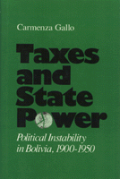

<body bgcolor="#FFFFFF" text="#000000" link="#0000FF" vlink="#CC0000" alink="#CC0000"><center><hr width="350" size="1" align="center" noshade>The impact of the Bolivian tax code and its relationship to class structure<hr width="350" size="1" align="center" noshade><p><a href="https://cdcshoppingcart.uchicago.edu/Cart/ChicagoBook.aspx?ISBN=9780877228004&&PRESS=temple" target="_top">Buy this book!</a> | <a href="https://cdcshoppingcart.uchicago.edu/Cart/Cart.aspx?PRESS=temple" target="_top">View Cart</a> | <a href="https://cdcshoppingcart.uchicago.edu/Cart/Cart.aspx?PRESS=temple" target="_top">Check Out</a></p><p></p></center><!--none//--><h1>Taxes and State Power</h1>
<H2>Political Instability in Bolivia, 1900-1950</H2>
<h3>Carmenza Gallo</h3>
<P>cloth 0-87722-800-0 $65.50, Jun 91, <FONT COLOR=#990033>Out of Stock Unavailable</FONT>
<BR> 200 pp
</P><BLOCKQUOTE><I>"Carmenza Gallo has wrought three minor miracles: she has made sense of Bolivia�s arcane politics by looking seriously at the state�s bases of fiscal and popular support: she has challenged our conventional wisdom concerning the relative vulnerability of export-oriented domestic economies to oligarchic control and military power; she has provided a new basis for examining state formation in Latin America. Her greatest innovation has been to introduce taxation and government finance as both causes and effects of state-class relations.... In a day of debt crisis and fiscal reorganization among Third World states, the issues she raises have a very contemporary ring."</I>
<br>&#151<b>Charles Tilly</b>, New School for Social Research<I></I></BLOCKQUOTE>
<p>In this interpretation of Bolivia�s political and social development, Carmenza Gallo focuses on the impact of the Bolivian tax code and its relationship to class structure. She argues that differences in state formation in primary export economies merge from variation of three main elements: class structure; the economic base and the export sector�s degree of integration into the domestic economy; and the reliance of fiscal resources on export sectors. Gallo produces a more complete view of the state�s responses to internal and international circumstances and a better understanding of the conditions under which officials of weak states, like Bolivia, act independently of upper classes.
<BR>&nbsp;<h2>Reviews</h2>
<p><I>"A solid contribution to our understanding of the formation and function of the state in a particular kind of relation to the world economy. Gallo's emphasis on taxation is appropriate, and will be instructive to social scientists who have tended to ignore this crucial aspect of state-class relations. Her work will be particularly well received, as it follows relations between different classes, and between classes and the state, while also paying attention to competition between firms and sectors. Rather than make extraordinary theoretical claims for the focus on taxes, Gallo shows how her approach complements and redirects other approaches to class-state relations."</I>
<br>&#151<b>Stephen G. Bunker</b>, University of Wisconsin, Madison
<BR>&nbsp;<h2>Contents</h2><P>
<p>Acknowledgments
<br>1. Issues and Concepts
<br>2. The Tin Industry's Demand for Public Services
<br>3. Agricultural Production and State Services
<br>4. Class Contradictions and the State's Political Basis
<br>5. Tax Policy
<br>6. State Building and Political Instability
<br>7. Taxes and State Power in Comparative Perspective
<br>Notes
<br>Bibliography
</P><BR>&nbsp;<H2>About the Author(s)</H2>
<table><tr><td valign="top"><img src="/tempress/authors/791_au.gif" height="90" width="75"></td><td width="100%" valign="middle"><p><b>Carmenze Gallo</b> is Assistant Professor of Sociology at Queens College, The City University of New York and an Affiliated Researcher at the Center for Studies of Social Change at the New School for Social Research.</P></td></tr></table>
<BR><H2>Subject Categories</H2>
<p><A HREF="/tempress/latin.html" TARGET="_top">Latin American/Caribbean Studies</a>
</p>
<p align="center"><a href="https://cdcshoppingcart.uchicago.edu/Cart/ChicagoBook.aspx?ISBN=9780877228004&&PRESS=temple" target="_top">Buy this book!</a> | <a href="https://cdcshoppingcart.uchicago.edu/Cart/Cart.aspx?PRESS=temple" target="_top">View Cart</a> | <a href="https://cdcshoppingcart.uchicago.edu/Cart/Cart.aspx?PRESS=temple" target="_top">Check Out</a></p><p><font face="Arial" size="1"><a href="copyright.html" onMouseOver="window.status='Web Copyright Policy';return true;" onMouseOut="window.status=''" title="Web Copyright Policy">&copy;</a> 2015 <a href="http://www.temple.edu" target="new" onMouseOver="window.status='Link to Temple University home page';return true;" onMouseOut="window.status=''" title="Link to Temple University home page">Temple University</a>. All Rights Reserved. http://www.temple.edu/tempress/titles/791_reg.html</font></p>